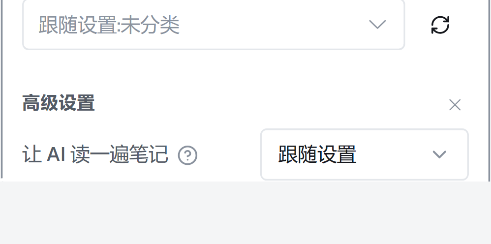

同一张 Obsidian 卡片、同一块区域（上方那个 保存目录 下拉 → 分界处 → 「高级设置」标题 → 第一行设置），
只换分界的处理方式。图是真机卡片截的：把画布缩放到 3.31 倍（接近你放大后的视角），
按设计像素裁出这块区域；五张图上下位置对齐，可以直接翻着比。
做法依据、取舍与诚实清单见 docs/research/advanced-settings-card-styles.md §6.2。

—
—
| 做法 | 分界处怎么处理 | 分界间距 （上 / 下） | 面板高 | 卡片高 | 依据 |
|---|---|---|---|---|---|
| V1 现状 | 满宽 1px 细线 | 16 / 8 | 247.8px | 431.7px | —（Material 把满宽线定义为「分隔无关的大段落」） |
| V2 只留白 已落地 | 去掉线，靠间距 + 11px 小标题分组 | 24 / 0 | 238.8px | 430.7px | Windows 11 官方设置页示例 / GNOME HIG / libadwaita AdwPreferencesGroup |
| V6 内缩细线 | 线保留，两侧各内缩 16px | 22 / 10 | 251.8px | 441.7px | Material 的 inset 分隔线："separate related content within a section" |
| V3 线淡化 | 同位置，颜色混到 55% 深度 | 22 / 10 | 251.8px | 441.7px | —（仍满宽，只是让线安静一点） |
| V4 标题下划线 | 线不横贯整卡，压在「高级设置」这行下面 | 22 / 8 | 247.8px | 437.7px | el-divider content-position="left" / antd titlePlacement="start"（两家文档把该用途限定在文章章节 / 行内文字） |
| V5 浅底分组 | 不画线，整段加一层浅底 + 圆角 | 20 / 0 | 258.8px | 446.7px | libadwaita .boxed-list / Windows SettingsCard |
不是粗细或颜色的问题，是层级用错了。Material 对分隔线分了两类用途：
| 官方原文 | 说的是哪一类 |
|---|---|
"separate larger sections of unrelated content"、"separate interactive areas from non-interactive areas" | 满宽 线（我们现在这种） |
"separate related content within a section"，默认「两侧等距内缩」 | 内缩 线（V6） |
我们这条线是满宽、画在同一张卡的表单区中间、两边是同一组设置——按上表它干的是「分隔无关大段落」的活，
所以读起来像「把卡片切断」而不是「这里开始新段落」。Carbon 有句同类的告诫："The divider should not be used to separate every switcher item."
另一条路在系统级文档里更直接：密集设置区用间距 + 小标题分节，不画线——
Windows 11 官方设置页示例里的区块标题就是「Margin="1,30,0,6" + 小标题」，注释写明
"following the correct Windows 11 design specifications for things like spacing, section headers"；
GNOME HIG 写「each list can be given a heading」；libadwaita 的 AdwPreferencesGroup 本身就是 title + description、不画线。
这就是 V2。